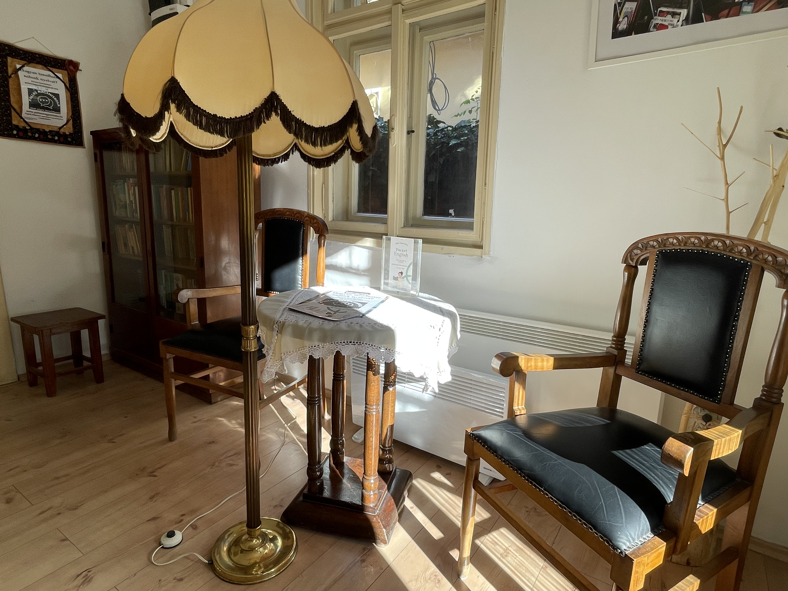

Szélike királykisasszony
Dezső, az ezermester szerszámok segítségével meséli el Szélike királykisasszony történetét. A csípőfogó János úrfivá változik, a fúrógépből pedig jó barát kerekedik: a szerszámosládából minden szerszám életre kel.
Varázslatos mesék hétköznapi tárgyakkal, avagy magyar népmesék, amelyek a szemünk előtt születnek.
A régi tárgyak új életre kelnek, a konyhai eszközökből mesehősök lesznek, és egy pillanat alatt megnyílik előttünk a mesék kapuja.
Ismerd meg a meséket
Arnóti-Szanyi Éva vagyok, anya, feleség, óvónő, gyógypedagógus – sokféle szerep, amelyek mind hozzátettek ahhoz, aki ma vagyok.
Hivatásomat 16 éven keresztül aktívan gyakoroltam. A gyermekekkel való foglalkozás, a mesék világa és a közös felfedezés mindig fontos része volt az életemnek.
Lányaim születése után az életünk más irányt vett. Egy idő után éreztem, hogy szeretnék valami újat teremteni: olyan tevékenységet, amelyben újra megélhetem a pedagógusi hivatás örömét, alkothatok, és átadhatok valamit abból, amit fontosnak tartok. Így találtam rá a tárgyanimációs mesélésre.
„Ha receptre lehetne írni, én mindenkinek napi egy mesét felírnék, akkor biztos még szebb lenne a világ.”
A mesékben ott van az élet sokfélesége, a bátorság, a keresés és a változás lehetősége. Számomra egy új fejezet kezdődött, amelyben a mesék ismét megtalálták a helyüket az életemben.
Amikor a régi tárgyak új életre kelnek, és mesélni kezdenek…
A tárgyanimációs mesélés során magyar népmeséket hívok életre hétköznapi, sokszor régi, jól ismert használati tárgyak segítségével. A tárgyak kilépnek megszokott szerepükből: egy konyhai eszközből mesehős lesz, egy régi szerszám különleges képességre tesz szert, és egyszer csak egy egész mesebeli világ bontakozik ki előttünk.
Különösen közel állnak hozzám a régi, családi örökségből származó tárgyak. Számomra ezek nem csupán használati tárgyak, hanem egy letűnt világ apró darabjai.
És persze az újonnan felfedezett tárgyak is folyton inspirálnak. Néha elég egy különös forma, egy mozdulat vagy egy váratlan hasonlóság, és máris megszületik bennem a kérdés: vajon melyik mesében kaphatna szerepet ez a tárgy?
Hiszem, hogy a magyar népmesék így is közel kerülhetnek a gyerekekhez: játékosan, meglepetésekkel, a képzelet szabadságát meghagyva. Néha egy régi tárgyban bújik meg a mese, és arra vár, hogy valaki végre megszólaltassa.
A magyar népmesék gazdag világából merítek. A tárgyak, mondókák és énekek segítségével a történetek a gyerekek szeme előtt elevenednek meg.
Dezső, az ezermester szerszámok segítségével meséli el Szélike királykisasszony történetét. A csípőfogó János úrfivá változik, a fúrógépből pedig jó barát kerekedik: a szerszámosládából minden szerszám életre kel.

Bözsi, a takarító a takarítószerei segítségével mesél. Gumikesztyű, seprű, felmosó és lapát is szerepet kap, miközben együtt izgulhatunk, vajon Aranyhajú Ilona legyőzi-e a sárkánykirályt.

Konyhai eszközök segítségével megelevenedik a nagymama konyhájának világa, és a mese végére az is kiderül, miért olyan kíváncsi a királykisasszony.

Rozi tereget: anyagok, textilek és ruhadarabok – selyem, muszlin, zokni és nadrág – segítenek életre kelteni ezt a különleges történetet.
A programokat a gyermekek életkorához és az adott közösséghez igazítom.
Ismert és kevésbé ismert magyar népmeséket hozok közelebb a gyerekekhez régi használati tárgyak segítségével.
A mese után együtt kalandozunk tovább. Beszélgetünk a történetről, játszunk, alkotunk, és a gyerekek maguk is részeseivé válnak a mese világának.
Óvodáknak, általános iskoláknak, könyvtáraknak, művelődési házaknak és családi rendezvények szervezőinek.
Pedagógiai és gyógypedagógiai tapasztalattal rendelkezem, a magyar népmesék hagyományára építek, és sajátos tárgyanimációs technikával teremtek különleges vizuális élményt.
Bízom benne, hogy lesz lehetőségem személyesen is egy-egy mesével elvarázsolni Önöket. Várom megkeresésüket!
Szeretettel,
Arnóti-Szanyi Évi